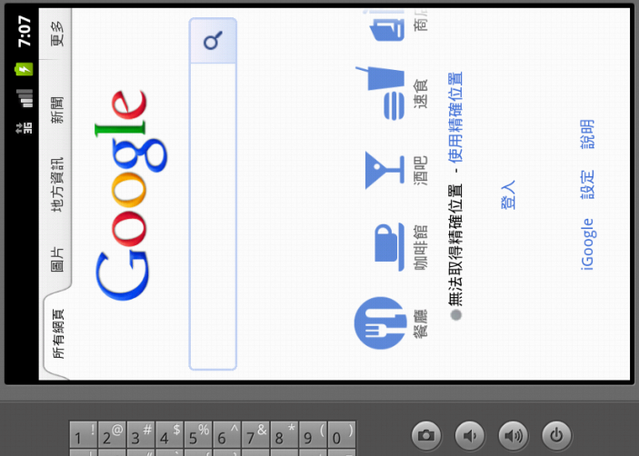

Emulator 可以用鍵盤直接操作，有些對應還滿直覺的：
-
Alt-Enter - 全螢幕（但在 Linux/Mac 都試不出來？）
-
Ctrl-F11 或 Ctrl-F12 - 切換縱向（Portrait）或橫向（Landscape）顯示。
-
Home - Home
-
F2 - Menu
-
Esc - Back
-
F5 - Search
Android 2.3.3 螢幕無法轉向？
目前在 Android 2.2, 4.0.3 跟 4.1 測過，都可以用 Ctrl-F11 或 Ctrl-F12 來切換螢幕的走向。目前只有遇到在 Android 2.3.3 上有無法轉向的問題：

|
|
建議用內建的瀏覽器（Internet/Browser）做測試，因為像首頁、撥號程式等完全不理會顯示方向的改變。另外要確認 Settings > Display > Auto-rotate screen 是有勾選的。 |
2.3.3 上面螢幕無法轉向的問題暫時還找不到解法，目前傾向這是 emulator 才有的問題：
-
Android - Emulator in landscape mode, screen does not rotate - Stack Overflow (2011-09-12) - 提到 accelerometer 跟 keyboard lid support，但調整過後在 Android 2.3.3 上都沒有作用。
-
Issue 13189 - android - Orientation does not change from landscape to portrait on Emulator on 2.3 - Android - An Open Handset Alliance Project - Google Project Hosting (2010-12-14) - 可以從 portrait 轉成 landscape，但反過來就不行。不過現實中遇到的狀況是連 portrait 轉成 landscape 都做不到。